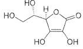

//= template/header-inn.html
Средство от простуды и гриппа
Простуда, грипп и ОРВИ – наиболее частые заболевания в осенне-зимнийи зимне-весенний периоды как у взрослых, так и у детей. По данным статистики ими ежегодно болеют более 500 млн чел.
Простуда –«народное» название обширной группы острых респираторных инфекционных заболеваний (ОРЗ), вызываемых многочисленными возбудителями (вирусами или бактериями).
Комплексный терапевтический эффект:
- снижает температуру
- уменьшает головную боль
- устраняет ломоту в мышцах и суставах
- уменьшает насморк и чихание
- снижает заложенность носа
- способствует освобождению придаточных пазух носа
- облегчает дыхание
- горячее питье смягчает раздраженное горло
- активизирует защитные силы организма для борьбы с инфекцией
Схема и способ применения:
Преимущества состава и формы:
- поддерживает оптимальный режим питья и уровень водной нагрузки во время заболевания, снижая симптомы интоксикации
- комбинированный многокомпонентный состав: парацетамол, фенилэфрин, фенирамин, витамин С оптимальная дозировка каждого из компонентов, достаточная для обеспечения лечебного эффекта и благоприятного профиля безопасности
- популярная форма выпуска лекарств от гриппа и простуды – порошок для приготовления горячего напитка
Удобство применения:
- приятный вкус готового напитка;
- широкий ассортимент вкусовой палитрыпрепарата - на выбор: лимон, малина, апельсин;
- две формы на выбор: 5 и 10 пакетиков в упаковке;
Экономичность лечения:
- ценовая доступность средства от простуды и гриппа;
- экономия денежных средств.
Преимущества состава и формы:
- специальная форма выпуска препарата для экстренного начала лечения ОРЗ, когда нет возможности и времени для приготовления горячего напитка
- комбинированный многокомпонентный состав: парацетамол, фенилэфрин, витамин С оптимальная дозировка каждого из компонентов препарата, достаточная для обеспечения лечебного эффекта и благоприятного профиля безопасности.
Экономичность лечения:
- доступная цена препарата;
- экономия средств.
Комплексный терапевтический эффект:
- снижает температуру - жаропонижающее действие
- уменьшает головную боль
- устраняет ломоту в мышцах и суставах
- облегчает дыхание
- уменьшает насморк и чихание
- уменьшает заложенность носа
- активизирует защитные силы организма в борьбе с инфекцией
- снижает гиперемию и отек слизистых оболочек верхних отделов дыхательных путей и придаточных пазух
Схема и способ применения:

Парацетамол
- Обладает обезболивающим, жаропонижающим, умеренным противовоспалительным действием, а также анальгезирующим действием.
- Не оказывает повреждающего воздействия на слизистую оболочку желудка.

Витамин С
- Обладает антиоксидантными свойствами.
- Способствует усилению защитных сил организма.
Фенилэфрин
- Обладает сосудосуживающим действием, уменьшая отек и гиперемию слизистых оболочек верхних отделов дыхательных путей и придаточных пазух.
- Сужает сосуды слизистой носа, облегчая дыхание.
Фенирамин
- Оказывает противоаллергическое действие и способствует облегчению таких симптомов ОРЗ, как чихание и насморк.
- Устраняет зуд горла, носа и глаз, гиперемию и отечность слизистых оболочек носоглотки и полости носа.